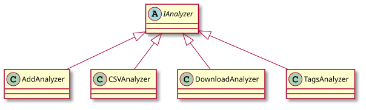
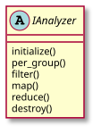
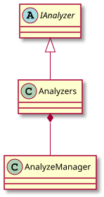

Create an analyzer¶
You can use built-in analyzers included with IDM-Tools to help with creating a new analyzer. The following list some of these analyzers, all inheriting from the the IAnalyzer abstract class:

For more information about these built-in analyzers, see:
To create an analyzer methods from the IAnalyzer abstract class are used:

All analyzers must also call the AnalyzeManager class for analysis management:

The following python code and comments, from the CSVAnalyzer class, is an example of how to create an analyzer for analysis of .csv output files from simulations:
class CSVAnalyzer(IAnalyzer):
# Arg option for analyzer init are uid, working_dir, parse (True to leverage the :class:`OutputParser`;
# False to get the raw data in the :meth:`select_simulation_data`), and filenames
# In this case, we want parse=True, and the filename(s) to analyze
def __init__(self, filenames, parse=True):
super().__init__(parse=parse, filenames=filenames)
# Raise exception early if files are not csv files
if not all(['csv' in os.path.splitext(f)[1].lower() for f in self.filenames]):
raise Exception('Please ensure all filenames provided to CSVAnalyzer have a csv extension.')
def initialize(self):
if not os.path.exists(os.path.join(self.working_dir, "output_csv")):
os.mkdir(os.path.join(self.working_dir, "output_csv"))
# Map is called to get for each simulation a data object (all the metadata of the simulations) and simulation object
def map(self, data, simulation):
# If there are 1 to many csv files, concatenate csv data columns into one dataframe
concatenated_df = pd.concat(list(data.values()), axis=0, ignore_index=True, sort=True)
return concatenated_df
# In reduce, we are printing the simulation and result data filtered in map
def reduce(self, all_data):
results = pd.concat(list(all_data.values()), axis=0, # Combine a list of all the sims csv data column values
keys=[str(k.uid) for k in all_data.keys()], # Add a hierarchical index with the keys option
names=['SimId']) # Label the index keys you create with the names option
results.index = results.index.droplevel(1) # Remove default index
# Make a directory labeled the exp id to write the csv results to
# NOTE: If running twice with different filename, the output files will collide
results.to_csv(os.path.join("output_csv", self.__class__.__name__ + '.csv'))
You can quickly see this analyzer in use by running the included example_analysis_CSVAnalyzer example class.